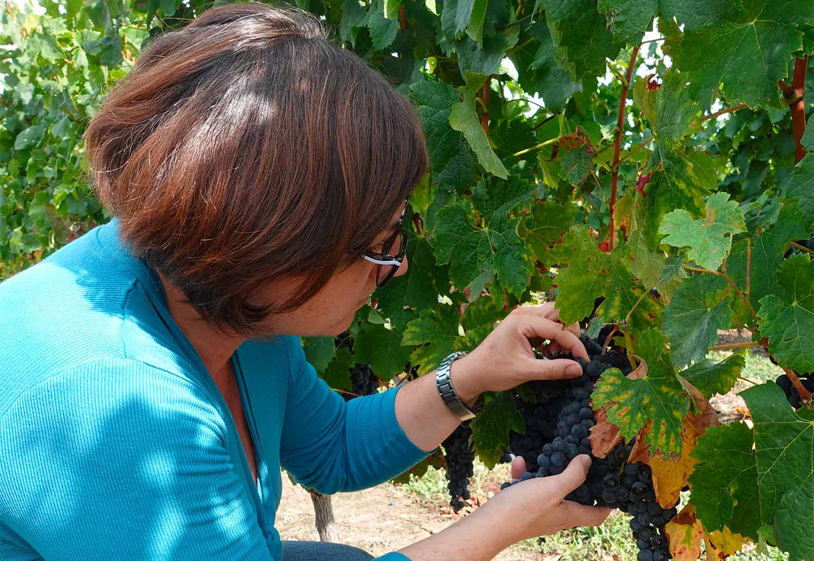
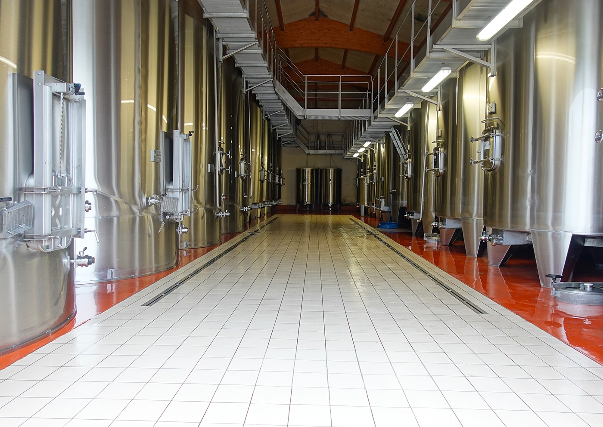

Vinification
Tradition et modernité

La recherche de la maturité
À l'approche des vendanges, les contrôles de maturité rythment les journées de septembre. Pour les raisins blancs, la priorité est la maturité aromatique : le seul outil fiable est la dégustation quotidienne des baies.
Pour les raisins rouges, les dégustations sont aussi fréquentes, mais nous recherchons la maturité phénolique : la qualité des pellicules et des pépins autant que les arômes.
« Comme tous les fruits, le raisin qui fait du bon vin est celui que l'on a envie de manger »

Du raisin à la cuve
Pendant les vendanges, le tri des raisins est rigoureux : on élimine tous les résidus de végétaux et on conserve les baies les plus mûres.
Les vins blancs sont vinifiés puis élevés à 90 % en cuves inox et 10 % en fûts de chêne neufs pour le Bordeaux blanc, et exclusivement en fûts de chêne neufs pour la cuvée « Prestige Blanc ».

L'élevage en barriques
Les vins rouges sont vinifiés en cuves inox thermorégulées, puis, selon les cuvées, élevés 12 à 18 mois en fûts de chêne dans les chais du domaine, jusqu'à l'assemblage des différentes cuvées.

La mise en bouteille
La mise en bouteille est effectuée par nos soins, en une seule fois, sous le contrôle de Laurent. Cette philosophie garantit une qualité identique de la première à la dernière bouteille de chaque cuvée.
Les bouteilles sont ensuite stockées dans nos locaux climatisés de 400 m².